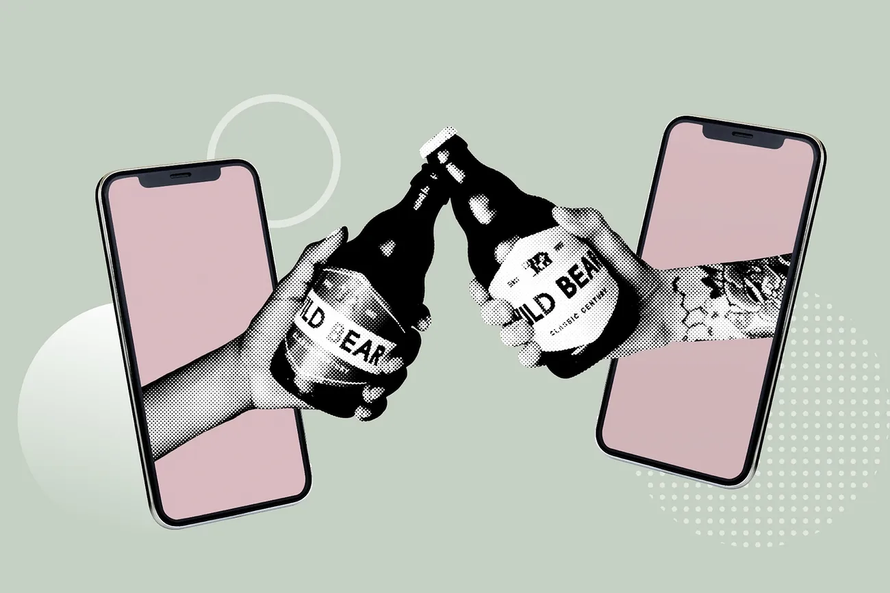
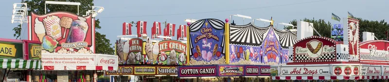
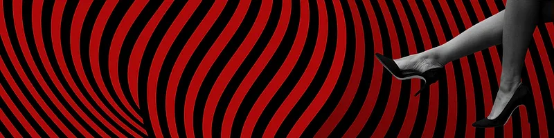

Sleep - Eat - Code - Repeat

Il hack la Nasa avec un bot discord !
Do you see any Teletubbies in here? Do you see a slender plastic tag clipped to my shirt with my name printed on it? Do you see a little Asian child with a blank expression on his face sitting outside on a mechanical helicopter that shakes when you put quarters in it? No? Well, that's what you see at a toy store. And you must think you're in a toy store, because you're here shopping for an infant named Jeb.

Ivre, il cré des bots discord pour s'amuser
Do you see any Teletubbies in here? Do you see a slender plastic tag clipped to my shirt with my name printed on it? Do you see a little Asian child with a blank expression on his face sitting outside on a mechanical helicopter that shakes when you put quarters in it? No? Well, that's what you see at a toy store. And you must think you're in a toy store, because you're here shopping for an infant named Jeb. Do you see any Teletubbies in here? Do you see a slender plastic tag clipped to my shirt with my name printed on it? Do you see a little Asian child with a blank expression on his face sitting outside on a mechanical helicopter that shakes when you put quarters in it? No? Well, that's what you see at a toy store. And you must think you're in a toy store, because you're here shopping for an infant named Jeb. Now that we know who you are, I know who I am. I'm not a mistake! It all makes sense! In a comic, you know how you can tell who the arch-villain's going to be? He's the exact opposite of the hero. And most times they're friends, like you and me! I should've known way back when... You know why, David? Because of the kids. They called me Mr Glass.
Ils quitent la formation de dev pour vivre leur passion du cirque !
villain's going to be? He's the exact opposite of the hero. And most times they're friends, like you and me! I should've known way back when... You know why, David? Because of the kids. They called me Mr Glass.
"J'ai rêvée que j'était sortie de chez moi sans mettre mon css !" Le témoignage poignant d'une développeuse surmenée
Normally, both your asses would be dead as fucking fried chicken, but you happen to pull this shit while I'm in a transitional period so I don't wanna kill you, I wanna help you. But I can't give you this case, it don't belong to me. Besides, I've already been through too much shit this morning over this case to hand it over to your dumb ass. Well, the way they make shows is, they make one show. That show's called a pilot. Then they show that show to the people who make shows, and on the strength of that one show they decide if they're going to make more shows. Some pilots get picked and become television programs. Some don't, become nothing. She starred in one of the ones that became nothing. Normally, both your asses would be dead as fucking fried chicken, but you happen to pull this shit while I'm in a transitional period so I don't wanna kill you, I wanna help you. But I can't give you this case, it don't belong to me. Besides, I've already been through too much shit this morning over this case to hand it over to your dumb ass. Look, just because I don't be givin' no man a foot massage don't make it right for Marsellus to throw Antwone into a glass motherfuckin' house, fuckin' up the way the nigger talks. Motherfucker do that shit to me, he better paralyze my ass, 'cause I'll kill the motherfucker, know what I'm sayin'? Well, the way they make shows is, they make one show. That show's called a pilot. Then they show that show to the people who make shows, and on the strength of that one show they decide if they're going to make more shows. Some pilots get picked and become television programs. Some don't, become nothing. She starred in one of the ones that became nothing.
